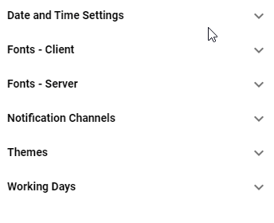

Navigating the Tool¶
This chapter describes the main user interface elements and concepts of administration tool (application).
Figure 1: Administration Tool
Changing Tool Language¶
Language of the tool can be changed with dropdown in top right corner of the tool.
Figure 2: Language settings
User Profile page¶
Users can edit account, password, add two-factor authentication or oversee active sessions associated with the users account in the User Profile page. To log out from the DW application, click the Sign out button located in the upper right corner of the screen.
Account¶
In the first tab, user can change his Email address. The Username field is read-only.
Password¶
In this section, user can change his password by filling the current password and the new password twice for a confirmation. Click Save to save the new password.
Authenticator¶
User can log in to DW using:
Basic authentication (username and password)
Two-factor authentication (optional)
For two-factor authentication, following applications are supported:
Microsoft Authenticator (iOS/Android)
To configure the two-factor authentication, follow the on-screen instructions.
Two-factor authentication can be configured as required for all users by default. For more information, contact 2Ring support.
If the two-factor authentication is configured as required for all users by default, every user has to follow these steps after filling the username and password on the login page:
Set up Mobile Authenticator to activate your account. Use the links to download a desired authenticator according to your operating system. When the application is succesfully installed on your mobile device, click Continue.
Open the application and scan the barcode. You can also use the provided key to continue with the authentication. Click Continue.

Enter the one-time code provided by the application and click Submit to finish the setup. Provide a Device Name to help you manage your OTP devices.

Two-factor authentication is succesfully configured. Every time you log into your account, you will be asked to provide a one-time code from the authentication application on the mobile device. After filling the code, click SIGN IN to log into your account.

Sessions¶
In this tab, you can review all active sessions associated with the users account and log out all sessions if some record looks suspicious.
Log¶
In this tab, you can review all logs regarding the account management.
Panels¶
A panel is a vertical set of configuration options that typically describe a single record.
Figure 4: Panel
Width of each panel can be adjusted by clicking and dragging the right border of the panel.
Figure 5: Resizing panels
A panel may contain options, that navigate into an another panel. For example, when a list item is clicked, a new panel is opened to the right, containing all of its options. A keyboard focus is always moved onto the newly opened panel. Header of a focused panel is colored in darker shade, than the rest of the panels. Panel can be closed by clicking the X button located on the right side of its header. When closing panel all child (opened to the right) panels are also closed.
Figure 6: Multiple opened panels
When panel contains unsaved changes * is shown in its header.
Figure 7: Unsaved changes in panel
Panel’s toolbar
Most common buttons in toolbar:
Figure 8: Most Common Buttons
- Save
Some panels do not save changes automatically. if this is the case, panel toolbar will contain save button.
- Delete
This button is visible if record is delible. Deleting record requires user confirmation to avoid unintended deletes by misclick.
- Refresh
Refreshing record requires user confirmation as all unsaved changes will be lost.
- Expand/collapse all groups
This button is visible only when panel contains more than one group.
Drawer¶
Drawer is used to change content of the first panel. Can be toggled by pressing icon in top left corner of the application. Selecting Layouts option opens new browser tab with DW Layout Tool.
Figure 9: Drawer
Fields¶
Fields represent a single configuration option. There are multiple types of fields:
Value field¶
Contain text or numeric values that the user can enter or change directly. Sometimes unit information is associated with this field to let user know the scale of provided value. Value can be copied by clicking the copy button that appears when you hover over the value field.
Figure 10: Value field
Dropdown¶
Contain a selection of predefined values, the user can choose from. The value cannot be manually edited. User can also navigate in the dropdown list using arrow keys on the keyboard and confirm the selection by pressing the Enter key. The currently selected value is highlighted in bold. Every dropdown contains a arrow facing downwards on the right side of its field.
Dropdowns may contain a search field, that is displayed right under the dropdown, when it’s rolled out. Items can be filtered based on the search criteria. Used search phrase can be cleared by pressing the button.
Some Dropdowns contain dynamic values, that may change over time. Such dropdowns can be refreshed using the refresh button.
Figure 11: Dropdown
Confidential field¶
A special type of a Value field used for managing passwords. For security reasons real passwords are not sent to client. Instead “****” is shown indicating that password is provided. Typed text is by default masked with ‘*’ character but can be shown by clicking icon and then hide again by clicking icon.
Figure 12: Confidential field
Time picker¶
Time picker is used to select specific time of the day. User can not write directly into field. Chosen value can be changed in dialog which opens up by clicking anywhere in field. Time is chosen by clicking any hour in dialog’s clock which closes dialog automatically.
Clock in picker’s dialog is localized based on selected tool’s language.
Figure 13: Time picker
{kind=link}
Color field¶
A special type of a Value field containing a color in HEX, RGB or string format. List of all supported color names is available here. A specific color name such as “red” or “blue” can also be used. Value can be copied by clicking the copy button that appears when you hover over the color field. The copied value can then be pasted only in another color field or a border style control.
A color can be chosen also through a color picker by clicking on a button or a colored square on the left side of the text field.
Figure 14: Color field
The color picker consist of two panels. A list of colors (Figure 12) and a color editor (Figure 13)
Figure 15: Color picker - List of colors
Currently selected color - In case color with transparency is selected, the transparency is visualized on the right side.
Search box - Colors can be filtered using the search box. When no search phrase is entered, all available colors are displayed. Otherwise only colors containing the entered phrase are displayed.
Default colors - Default colors.
Theme colors - Colors defined on current theme. For more information, see Theme colors chapter.
Color pipette - By clicking this button, user can pick any color from the screen by simply clicking on the targeted pixel.
Figure 16: Color picker - Color editor
Currently selected color - In case color with transparency is selected, the transparency is visualized on the right side.
Color palette - Simply click or drag and drop to a desired color.
Transparency slider - Adjusting a transparency.
Color pipette - By clicking this button, user can pick any color from the screen by simply clicking on the targeted pixel.
Borders Style¶
The style, width and color settings for the borders in a values area. The style of the border can be set by clicking on one of the available styles from the list on the left side of the panel. Width of the border, defined in per mille of the layouts height, can be set by editing the width field. Color can be set in HEX or RGB format by editing a text field or through a color picker that can be opened by clicking on a colored square or a icon.
Value can be copied by clicking the copy button that appears when you hover over the dropdown. The copied value can then be pasted only in another borders style field.
Figure 17: Borders Style
- Uniform Border Style
Whether border should be applied as a single border around the entire segment.
- Border
Available only if “Uniform Border Style” is enabled.
The style, width and color of the border.
- Top
Available only if “Uniform Border Style” is disabled.
The style, width and color of the values top border.
- Bottom
Available only if “Uniform Border Style” is disabled.
The style, width and color of the values bottom border.
- Left
Available only if “Uniform Border Style” is disabled.
The style, width and color of the values left border.
- Right
Available only if “Uniform Border Style” is disabled.
The style, width and color of the values right border.
Top, bottom, left and right borders are always applied to each cell in the values area while the outline border is applied to the whole values area.
Text Style¶
A special type of a field, that defines the font to use and whether bold or italic text should be used. Value can be copied by clicking the copy button that appears when you hover over the dropdown. The copied value can then be pasted only in another text style field.
Figure 18: Text style field
The text style control can be opened by clicking the text style icon on the right side of the field. The text style control consist of two panels. A list of predefined text styles on theme (Figure 16) and a text style editor (Figure 17)
Figure 19: List of Text styles
Search box - Theme text styles can be filtered using the search box. When no search phrase is entered, all available text styles are displayed. Otherwise only text styles containing the entered phrase are displayed.
Theme text styles - Text styles defined on current theme. For more information, see Theme text styles chapter.
Figure 20: Text style editor
Available Fonts - List of available fonts. Custom font can be defined by typing into the dropdown.
Bold/Italic/Underline - Whether bold, italic or underlined text should be used.
Custom CSS - Customize the text using a CSS properties.
Example:
text-decoration: underline; text-decoration-color: green; text-decoration-style: solid;
Makes the text look like following:
{kind=link}
Shadow Style¶
A special type of a field, allowing user to adjust the shadow of the element. Value can be copied by clicking the copy button that appears when you hover over the dropdown. The copied value can then be pasted only in another shadow style field.
Figure 21: Shadow style field
- Horizontal Offset
Horizontal distance of the shadow from the element. Measured in permilles of the entire Layout’s height.
- Vertical Offset
Vertical distance of the shadow from the element. Measured in permilles of the entire Layout’s height.
- Blur
A shadows blur. Measured in permilles of the entire Layout’s height.
- Spread
Distance by which to expand a shadow in all directions. Measured in permilles of the entire Layout’s height.
- Color
For more information see Color field section.
Color of the shadow.
Lists¶
Lists display any collection of items. These items can be managed using the following controls:
Figure 22: List
- Search field
Enter search criteria to filter displayed items.
- Refresh button
Click to refresh list items. If any items (or their children) have unsaved changes user is ask for confirmation before refreshing list items.
- Add button
Click to add new item.
- Copy button
Available only if at least one item is selected.
Click to copy selected items.
- Delete button
Available only if at least one item is selected.
Click to delete selected items. User is ask for confirmation before deleting items.
- Select/deselect all items checkbox
Click to select or deselect all items.
- Item selection checkbox
Click to select a single item.
- Show only selected items toggle
Toggles between displaying all items or only selected ones.
Clicking an item or adding a new item, opens up a new panel containing all related configuration options. When the name of the item is not set ‘(untitled)’ is displayed in list item. In most cases, the list items are sorted alphabetically in ascending order.
Items marked with red text or background signalize that one or more errors exist on the item itself or on its child items.
Figure 23: List with invalid item
Figure 24: List with invalid item detail
Multi-selection Lists¶
Multi-selection lists do not open detail of selected record in new panel (as common lists do). Instead user can select multiple items.
Figure 25: Multi-selection list
- Search field
Enter search criteria to quickly filter displayed items.
- Refresh button
Click to refresh available items.
- Select All button
Click to select all items.
- Deselect All button
Click to deselect all items.
- Show only selected items toggle
Toggles between displaying all items or only selected items.
- Item selection toggle
Click to select an item.
Links¶
Links open corresponding child panels. Links are distinguished from other controls by using all upper-case characters, by using “…” suffix and by color of the text.
Figure 26: Links
Currently opened link has white text on blue background.
Figure 27: Opened Link
Groups¶
Groups are sets of related configuration options that can be expanded or collapsed by clicking the group header. Collapsing a group hides all the configuration options it contains.
Figure 28: Groups
Groups signalize if any option or record inside them are not valid or have error by using red color for header text.
Figure 29: Groups
If collapsed group contains opened record, background color of header is changed to signalize this fact.
Figure 30: Opened record in collapsed group
If collapsed group contains opened record and also there is error inside group, background of group header becomes red.
Figure 31: Opened record in collapsed invalid group
Validation Errors¶
When an invalid value is entered into a field, the field is marked with red color. Furthermore, to help locate the invalid value, all parent lists, groups and panels are highlighted too.
The validation message is briefly described under the field, on the right side.
Figure 32: Validation error
{kind=link}
Banners¶
Banners are used to display information, warnings or errors associated with opened record or list. There are three types of banners:
- Information banner
They have blue background and contain informative text.
Figure 33: Information banner
- Warning banner
They have yellow background and contain facts that user should be aware of.
Figure 34: Warning banner
- Error banner
They have red background and they appear when action does not complete successfully. Can contain contextual action buttons.
Figure 35: Error Banner with dismiss action